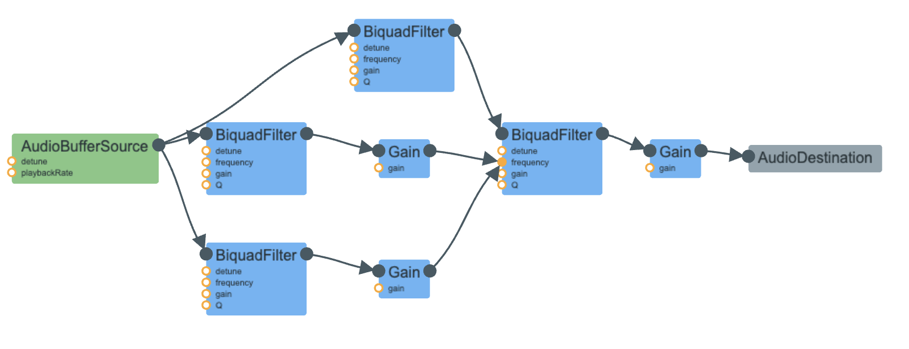

A blog by Chloe Nguyen
The gentle babbling of a brook, with its soothing bubbly sound, is a sound that
connects us with nature and induces a sense of tranquility.
In an attempt to recreate this serene auditory experience, I not only crafted a code that
utilizes Web Audio to generate a digital representation of a babbling brook, but also grew to hate this sound.
Let's delve into the key components of the code to understand how this
tranquil soundscape was achieved, following this orginal SCD code:
{RHPF.ar(LPF.ar(BrownNoise.ar(), 400), LPF.ar(BrownNoise.ar(), 14) * 400 + 500, 0.03, 0.1)}.play
1. The babbling brook sound is generated by a series of RHPF and LPF, which are:
2. Then the components are connected like this figure below:
It sounds very close to the orginal sound and I'm very proud of it, but I also feel like it sounds like a sheet of metal is being shaken.
I first attempt the fire sound, but it was too complicated for my own good with
the hissing noise, crackling of the fire/wood, and the flickering of the flame, along with
the splitting and envelopping of the sound. I tried for a while and most of the time the sound
either stays as a hissing noise or inaudible, so I decided to switch to a simpler sound, the phone busy signal.
The phone busy signal is a sound that is quite familiar to me, as I have heard it many times
when I was younger. It is a very annoying and frustrating sound, but also very nostalgic.
After trying very hard to recreate the fire sound, I find the busy signal extremely easy to recreate. It was:
The connection is as simple as this:
oscillator.connect(filter);
filter.connect(audioCtx2.destination);
However, I thought this is really boring so I played around with the code for a bit and added a
gain node and a delay node along with randomness in many values to make it sound more interesting.
Here's a snippet of what I added:
const gain = audioCtx2.createGain();
gain.gain.value = 0.5 + Math.random() * 0.8;
const delay = audioCtx2.createDelay();
delay.delayTime.value = 0.1 + Math.random() * 0.4;
const now = audioCtx2.currentTime;
for (let i = 0; i < 200; i++) {
const time = now + i*0.11;
const frequency = 60 + Math.random() * 1000;
oscillator.frequency.setValueAtTime(frequency, time);
}
And this code is connected in the following figure:
Here's a breakdown of what the code does:
Overall, this code generates a random noise sound by creating an oscillator with a random frequency, filtering the sound with a resonant bandpass filter, adding gain and delay effects, and scheduling a series of random frequency changes for the oscillator, and finally, making the robot's beep boop noise. I compared and tuned this robot sound a lot to ones on Youtube and I think I got pretty close to the sound that I wanted to recreate! I'm satisfied with the interesting sound it's making!